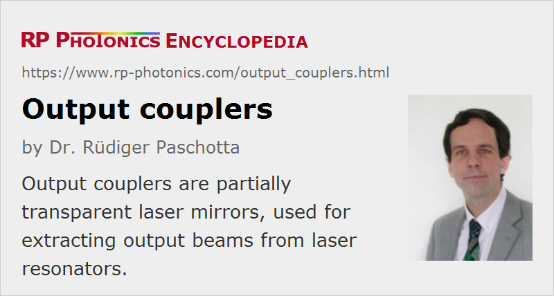

Output Couplers
Definition: partially transparent laser mirrors, used for extracting output beams from laser resonators
Alternative term: output coupling mirrors
More general term: laser mirrors
German: Auskoppelspiegel
Categories: photonic devices, lasers
How to cite the article; suggest additional literature
Author: Dr. Rüdiger Paschotta
An output coupler is a semi-transparent dielectric mirror used in a laser resonator. Its function is to transmit part of the circulating intracavity optical power in order to generate a useful output of the laser.
As for basically all laser mirrors, the reflecting coating of an output coupler mirror is on the inner side, i.e., on the side of the mirror substrate which is oriented towards the laser resonator. This is because otherwise one would have a serious impact of losses by parasitic reflections on that inner side, which is exposed to the full circulating optical power.
Output Coupler Transmissivity
An important property of an output coupler is its transmissivity (the degree of its transmission of optical power). A low output coupler transmissivity leads to a low threshold pump power, but also possibly to a poor laser efficiency if the losses due to output coupling do not dominate over other (parasitic) losses in the laser resonator (low output coupling efficiency). The output coupler transmissivity is often chosen to maximize the output power, although its optimum value may be lower or higher if there are other design goals, e.g. minimizing the intracavity intensities or suppressing Q-switching instabilities in a passively mode-locked laser.
Flat and Curved Output Couplers
Output coupler mirrors are often mirrors with a flat surface, since it is often convenient to obtain a collimated beam at the output. (For a linear resonator, the wavefronts of the resonator modes must match the mirror surface, so that a flat output coupler results in a focus at that place.) Also, misalignment of any optical element other than the output coupler itself will then lead only to a parallel shift of the output beam, but not to a change in direction (→ beam pointing fluctuations). In the case of an output coupler with a curved (e.g. concave) surface, one also has to take into account that the mirror substrate will usually have a focusing or defocusing effect on the output beam.
Reflections from the Back Side
Note also that the back side of the glass substrate of an output coupler mirror has some reflectivity, which may have an effect on the laser performance. Even the residual reflectivity of an anti-reflection-coated back side may create an interference (etalon) effect (if the surfaces are flat and parallel), which modulates the effective transmission of the device as a function of wavelength and can thus influence the laser bandwidth. In a mode-locked laser, such effects (even at a very low level) can cause instabilities. A way to avoid such problems is to use a slightly wedged output coupler, so that the reflected light from the back side does not interfere with the laser modes.
Variable Reflectivity Mirrors
In the case of stable optical resonators, the output coupler mirror usually has a spatially constant output coupler transmission (see below). Output couplers of unstable resonators can be very different: they are often variable reflectivity mirrors, having a transversely variable reflectance e.g. with a Gaussian or super-Gaussian profile, possibly even with total reflection within some radius and total transmission outside that radius.
Suppliers
The RP Photonics Buyer's Guide contains 27 suppliers for output couplers. Among them:
Questions and Comments from Users
Here you can submit questions and comments. As far as they get accepted by the author, they will appear above this paragraph together with the author’s answer. The author will decide on acceptance based on certain criteria. Essentially, the issue must be of sufficiently broad interest.
Please do not enter personal data here; we would otherwise delete it soon. (See also our privacy declaration.) If you wish to receive personal feedback or consultancy from the author, please contact him e.g. via e-mail.
By submitting the information, you give your consent to the potential publication of your inputs on our website according to our rules. (If you later retract your consent, we will delete those inputs.) As your inputs are first reviewed by the author, they may be published with some delay.
See also: output coupling efficiency, mirrors, dielectric mirrors, laser mirrors, lasers, laser resonators
and other articles in the categories photonic devices, lasers
|  |
If you like this page, please share the link with your friends and colleagues, e.g. via social media:
These sharing buttons are implemented in a privacy-friendly way!